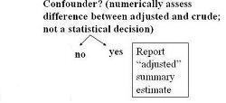

Reducing Confounding During Data Analysis
Lead Author(s): Jeff Martin, MD
Methods for Reducing Confounding During Data Analysis: Stratification
In the data analysis phase, we can stratify to reduce confounding.
An example of stratification can be found in the Matches, Smoking, and Lung Cancer Study.
Do NOT Adjust - Qualitative Interaction
Stanton provides an example of a study that looked at the effects of caffeine consumption on delayed conception.
- In those women who do not use caffeine, smoking is associated with over a two-fold risk (2.4) of delayed conception.
- In women who use lots of caffeine the risk of smoking is 0.7, if anything a protective effect.
This is qualitative interaction. Do NOT summarize these numbers.
Third Variable: Decision Tree - Confounding
Determining the third variable:
- If there is no evidence of interaction or effect modification, you then look for confounding.
To do this, you will form an adjusted summary estimate of the two or more stratum-specific estimates and you will compare the adjusted measure of association to the crude measure of association.

- If you deem that confounding is present, you will want to report the adjusted measure of association.
Underlying Assumption for a Summary Estimate
If the relationship between the exposure and the outcome varies meaningfully in a clinical/biologic sense across strata of a third variable:
- it is not appropriate to create a single summary estimate of all of the strata.
When you summarize across strata, the assumption is that no interaction is present.
Inappropriate Statistical Testing for Confounding
Statistical testing for confounding is inappropriate when we know the variable is a known confounder or the study has a small sample size.
References